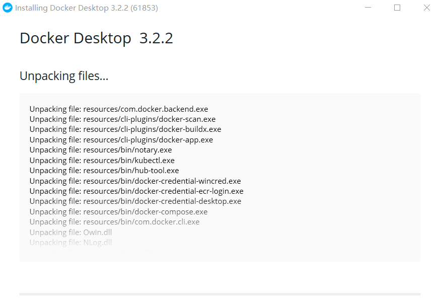

# 安装
# Windows
要在 windows 下安装 docker 必须满足下面的条件：
- 专业版
- 家庭版
除此之外，硬件还需要满足下面要求：
# 查看 Windows 版本
快捷键 Ctrl + R，输入 winver, 回车
# Windows 开启虚拟化
开机或重启电脑过程中，在自检画面处反复按 F2 热键（注：部分机型使用 Fn+F2）进入 BIOS Setup 设置界面
使用键盘的右方向键选中 “Configuration” 菜单，然后使用下方向键选中 “Intel Virtual Technology” 选项并回车；如图所示：
部分机型使用 Intel Virtualization Technology 表示，AMD CPU 则使用 “SVM Support” 表示
在弹出的设置窗口，Enabled 表示启用，Disabled 表示禁用（默认设置）。如需开启，请选择 “Enabled” 后回车；如图所示：
最后按键盘的 F10 热键（注：部分机型需要配合 Fn+F10）调出保存对话框，选择 “Yes” 保存退出并自动重启电脑；如图所示：
进入到操作系统。任务栏右键，选择：任务管理器，点击性能，显示已经启用虚拟化
- 若在 BIOS 中找不到 “Intel Virtual Technology” 或 “Intel Virtualization Technology” 或 “SVM Support” 选项，一般表示该电脑不支持虚拟化技术
- 只有使用微软 Hyper-V、思杰 XenServer、VMware ESXi 系列产品才需要启用 VT-x、VT-d 或 VT-c 等虚拟化技术。平常情况下使用微软 Virtual PC、VMware Workstation、VirtualBox 等虚拟机软件，启用 VT-x 虚拟化功能的意义并不大
背景描述
VT-x 虚拟化技术，需几个方面的条件支持：芯片组、BIOS、CPU 处理器、操作系统及宿主软件
操作系统方面：目前主流操作系统如：Windows 8/8.1、Windows Server 2012 等均支持 VMM 管理
芯片组方面：从 2010 年后的大部分产品已经提供支持
CPU 方面：AMD 产品绝大部分已经提供支持，只有 Intel CPU 则为中高端产品提供支持，具体可以通过该网址了解：http://ark.intel.com/zh-cn/Products/VirtualizationTechnology
# 启用 Hyper-V
- 快捷键 Ctrl + R，输入 appwiz.cpl, 回车
- 选择启用或关闭 windows 功能
- 找到 Hyper-V，勾上后点确定，电脑就会自动安装 Hyper-V 并重启


Hyper-V 的选项只有专业版的用户才会显示，家庭版的用户会看不见该选项
非专业版用户可以通过下面方式显示该选项：
- 新建文件 Hyper.cmd
- 用文本的方式打开，下入下面代码并保存
pushd "%~dp0"
dir /b %SystemRoot%\servicing\Packages\*Hyper-V*.mum >hyper-v.txt
for /f %%i in ('findstr /i . hyper-v.txt 2^>nul') do dism /online /norestart /add-package:"%SystemRoot%\servicing\Packages\%%i"
del hyper-v.txt
Dism /online /enable-feature /featurename:Microsoft-Hyper-V-All /LimitAccess /ALL
- 双击该脚本，安装后重启电脑便可以看见该选项，然后开启 Hyper-V 即可
# 安装 WSL2
- 以管理员身份打开 PowerShell 并运行：建议现在转到步骤 #2，更新到 WSL 2，但如果只想安装 WSL 1，现在可以重新启动计算机，然后继续执行步骤 6 - 安装所选的 Linux 发行版。 若要更新到 WSL 2，请等待重新启动计算机，然后继续执行下一步
dism.exe /online /enable-feature /featurename:Microsoft-Windows-Subsystem-Linux /all /norestart
- 检查运行 WSL 2 的要求
若要更新到 WSL 2，需要运行 Windows 10。- 对于 x64 系统：版本 1903 或更高版本，采用 内部版本 18362 或更高版本。
- 对于 ARM64 系统：版本 2004 或更高版本，采用 内部版本 19041 或更高版本。
- 低于 18362 的版本不支持 WSL 2。 使用 Windows Update 助手更新 Windows 版本。
- 启用虚拟机功能
安装 WSL 2 之前，必须启用 “虚拟机平台” 可选功能。 计算机需要虚拟化功能才能使用此功能。
以管理员身份打开 PowerShell 并运行：dism.exe /online /enable-feature /featurename:VirtualMachinePlatform /all /norestart
- 下载 Linux 内核更新包
- 下载最新包：最新包
- 运行上一步中下载的更新包。 （双击以运行 - 系统将提示你提供提升的权限，选择 “是” 以批准此安装。）
- 将 WSL 2 设置为默认版本
打开 PowerShell，然后在安装新的 Linux 发行版时运行以下命令，将 WSL 2 设置为默认版本：wsl --set-default-version 2 - 用下面命令查看当前版本
l wsl -l -v
# 开始安装
从官网下载 Docker
更改 Docker 默认安装路径（可跳过）
Docker 默认安装在 C 盘，Docker 的镜像占用了比较大的空间，所以最好将目录更改在其他盘。
在（s）盘新建 docker 文件夹，然后打开管理员命令行建立软连接mklink /j "C:\Program Files\Docker" "s:\docker"
双击下载好的 docker 安装包

# Ubuntu & Deepin
# 设置存储库
- 更新 apt 包索引并安装包以允许 apt 通过 HTTPS 使用存储库：
sudo apt-get update | |
sudo apt-get install \ | |
ca-certificates \ | |
curl \ | |
gnupg \ | |
lsb-release |
- 添加 Docker 的官方 GPG 密钥：
curl -fsSL https://download.docker.com/linux/ubuntu/gpg | sudo gpg --dearmor -o /usr/share/keyrings/docker-archive-keyring.gpg |
- 使用以下命令设置稳定存储库
echo \ | |
"deb [arch=$(dpkg --print-architecture) signed-by=/usr/share/keyrings/docker-archive-keyring.gpg] https://download.docker.com/linux/ubuntu \ | |
$(lsb_release -cs) stable" | sudo tee /etc/apt/sources.list.d/docker.list > /dev/null |
# 安装 Docker 引擎
- 安装最新版本的 Docker Engine 和 containerd
sudo apt-get install docker-ce docker-ce-cli containerd.io |
- 要安装特定版本的 Docker Engine，请在 repo 中列出可用版本，然后选择并安装：
apt-cache madison docker-ce |
- 安装特定版本，例如 5:18.09.13-0ubuntu-xenial.
VERSION_STRING 替换为 5:18.09.13-0ubuntu-xenial
sudo apt-get install docker-ce=<VERSION_STRING> docker-ce-cli=<VERSION_STRING> containerd.io |
- hello-world
sudo docker run hello-world |
# 搭建私有仓库
Docker 仓库实际上提供两方面的功能，一个是镜像管理，一个是认证。
前者主要由 docker-registry 项目来实现，通过 http 服务来上传下载；后者可以通过 docker-index 项目或者利用现成认证方案实现 http 请求管理。
官方已经制作好了相应的镜像（registry），我们只要创建一个容器运行该镜像即可。
下载 registry 镜像
docker pull registry
创建镜像仓库文件夹
作者创建的文件夹为 S:\docker-images，所有制作的镜像都会上传到该文件夹
docker run -d -p 5000:5000 -v /s/docker-images:/tmp/registry registry- -p：端口号
- -v：本地文件夹地址：docker 容器中的文件夹地址
- -d：后台运行
打开浏览器访问 http://localhost:5000/v2/_catalog
可以看见下面输出{"repositories":[]}
这表示当前仓库没有任何镜像，也可以在本地目录中查看
创建密钥与证书
新建文件夹 cers，作者的路径为 S:\docker-images\certs
打开命令行，执行下面代码
openssl req -newkey rsa:2048 -nodes -sha256 -keyout S:/docker-images/certs/domain.key -x509 -days 365 -out S:/docker-images/certs/domain.crt- openssl req：创建证书签名请求等功能；
- newkey：创建 CSR 证书签名文件和 RSA 私钥文件；
- rsa:2048：指定创建的 RSA 私钥长度为 2048；
- nodes：对私钥不进行加密；
- sha256：使用 SHA256 算法；
- keyout：创建的私钥文件名称及位置；
- x509：自签发证书格式；
- days：证书有效期；
- out：指定 CSR 输出文件名称及位置；
输入证书相关信息，Common Name 填仓库的 ip 地址

在 cers 文件夹会生成两个文件，分别是密钥和证书
windows下需要指定配置文件
在 windows 可能会报下面的错误
unable to find 'distinguished_name' in config
这是因为 windows 下必须指定配置文件，即必须有 -config 这个参数
- 新建文件 openssl.cnf，并写入下面内容
# # OpenSSL configuration file. # # Establish working directory. dir = . [ ca ] default_ca = CA_default [ CA_default ] serial = $dir/serial database = $dir/certindex.txt new_certs_dir = $dir/certs certificate = $dir/cacert.pem private_key = $dir/private/cakey.pem default_days = 365 default_md = md5 preserve = no email_in_dn = no nameopt = default_ca certopt = default_ca policy = policy_match [ policy_match ] countryName = match stateOrProvinceName = match organizationName = match organizationalUnitName = optional commonName = supplied emailAddress = optional [ req ] default_bits = 1024 # Size of keys default_keyfile = key.pem # name of generated keys default_md = md5 # message digest algorithm string_mask = nombstr # permitted characters distinguished_name = req_distinguished_name req_extensions = v3_req [ req_distinguished_name ] # Variable name Prompt string #------------------------- ---------------------------------- 0.organizationName = Organization Name (company) organizationalUnitName = Organizational Unit Name (department, division) emailAddress = Email Address emailAddress_max = 40 localityName = Locality Name (city, district) stateOrProvinceName = State or Province Name (full name) countryName = Country Name (2 letter code) countryName_min = 2 countryName_max = 2 commonName = Common Name (hostname, IP, or your name) commonName_max = 64 # Default values for the above, for consistency and less typing. # Variable name Value #------------------------ ------------------------------ 0.organizationName_default = My Company localityName_default = My Town stateOrProvinceName_default = State or Providence countryName_default = US [ v3_ca ] basicConstraints = CA:TRUE subjectKeyIdentifier = hash authorityKeyIdentifier = keyid:always,issuer:always [ v3_req ] basicConstraints = CA:FALSE subjectKeyIdentifier = hash - 命令加上 - config 参数
openssl req -newkey rsa:2048 -nodes -sha256 -keyout S:/docker-images/certs/domain.key -x509 -days 365 -out S:/docker-images/certs/domain.crt -config S:/docker-images/openssl.cnf